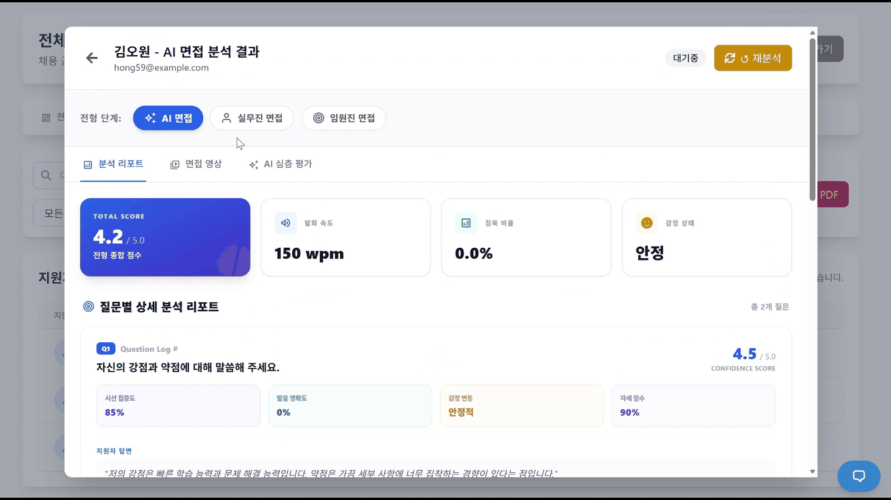

KOCRUIT는 채용공고 등록부터 서류 평가 · 면접 · 보고서까지 이어지는 기업용 채용 관리 시스템입니다. 서류 검토와 면접 기록에는 사람 손이 많이 가고, 면접관마다 평가 기준도 다릅니다. AI로 이 일을 돕되, AI는 점수와 근거까지만 내고 최종 판단은 사람이 하도록 만들었습니다.
2025.06 ~ 07 팀 프로젝트 · 팀장 (기여 40%) · 과정 내 1위 2025.09 ~ 2026.01 혼자 개선 · FastAPI · LangGraph · Whisper · MediaPipe · Redis
※ 지금 레포는 2026.07부터 전면 리팩토링 중이라, 코드가 이 설명과 다를 수 있습니다. 진행 중인 구조와 현재 상태는 아래 «재설계» 절에 적었습니다.
면접 중에는 음성 · 행동 · 게임형 검사 세 가지를 모으고, 면접관은 중간중간 메모를 남깁니다. 처음에는 점수를 계속 갱신하려 했지만, 그 계산이 응답을 늦춰 대화를 끊을 것 같았습니다. 그래서 점수는 면접이 끝난 뒤에 냅니다.
언어 · 비언어 · 심리 · 인지 · 직무 · 신뢰도 여섯 항목
02면접 후
끝나면 질문별 리포트
면접이 끝나면 질문마다 발화 속도 · 시선 집중도 · 감정 변동 · 자세 점수를 정리한 리포트를 만듭니다. 리포트는 판정문이 아니라 사람이 읽고 판단할 자료입니다.

발화 150wpm · 시선 85% · 자세 90%
03채용 관리
지원자 41명의 단계를 한곳에서
서류 · 실무진 · 임원진 단계를 지원자별로 한 화면에서 추적합니다. «떨리는 목소리»처럼 AI가 찾은 리스크는 따로 표시해, 담당자가 다음 면접에서 확인할 수 있게 했습니다.
단계별 점수 변화와 리스크 플래그
설계에서 내린 결정 · 팀장
기억하는 쪽과 계산만 하는 쪽을 나눴습니다
팀장으로 전체 아키텍처 · 면접 시스템 · 음성 인식(STT)을 맡았습니다. 서비스를 나눈 기준은 규모가 아니라 «상태를 갖느냐»입니다.
경계
경계를 코드로 남겼습니다
면접 연결 상태 · 실시간 통신 · DB처럼 계속 기억해야 하는 일은 백엔드(:8000)가, 음성 인식 · 평가처럼 받아서 계산만 하면 되는 일은 AI 서버(:8001)가 맡습니다. AI 서버에서는 실시간 통신 기능(websockets)을 아예 빼서, 둘이 다시 섞일 여지를 없앴습니다.
컨테이너
라이브러리 충돌이 기준이 됐습니다
음성 분석(Whisper · pyannote, PyTorch)과 표정 · 자세 분석(MediaPipe · DeepFace, TensorFlow)이 한 프로그램 안에서 충돌했습니다. 그래서 두 분석의 실행 환경(컨테이너)을 따로 나눴습니다.
멀티모달
영상 하나에서 세 가지를 뽑아 합칩니다
면접 영상에서 표정(DeepFace) · 자세와 시선(MediaPipe) · 음성(Whisper 전사)을 따로 분석해 합친 뒤, 언어 · 비언어 · 심리 · 인지 · 직무 · 신뢰도 6개 항목 리포트로 냅니다. 리포트는 참고 자료이고 점수는 사람이 매깁니다.
질문은 면접 전에 미리 만듭니다
면접을 전 · 중 · 후 세 구간으로 나눴습니다. 지원서가 들어오면 스케줄러가 질문과 평가표를 미리 만들어 둡니다. 면접 중에는 백엔드가 음성을 받아 세션을 관리하고, 판정은 상태가 없는 AI 서버에 넘깁니다. 면접 중에 질문까지 만들면 그 지연이 그대로 어색한 침묵이 되기 때문입니다.
지원자마다 질문 경로가 갈립니다
모든 지원자에게 같은 질문을 내면 면접이 형식이 됩니다. 포트폴리오가 있으면 프로젝트와 스킬을 먼저 뽑아 이력서 분석에 얹고, 없으면 이력서만으로 갑니다. 질문은 공통 → 개인 → 직무 → 회사 순으로 쌓고, 체크리스트 · 가이드라인 · 평가 기준을 함께 만들어 면접관마다 기준이 달라지는 문제를 줄였습니다.
DB
DB는 바꾸고 화면과의 약속은 지켰습니다
채용 단계를 지원서 표의 칸으로 계속 늘리던 방식을 별도 표(application_stage)로 분리하면서, 예전 칸 이름으로도 그대로 읽히게 했습니다(SQLAlchemy @property). 그래서 화면 코드를 한 줄도 고치지 않고 옮겼습니다.
비용
중복 AI 호출을 세 가지로 줄였습니다
같은 요청이면 24시간 동안 저장해 둔 결과를 다시 쓰고(Redis 캐시), 쉬운 작업에는 저렴한 모델을 쓰고, 만든 결과는 DB에 보관합니다.
수료 후 혼자 개선
팀 과제가 끝난 뒤 혼자 다시 잡은 구조
팀 기간(2025.06 ~ 07)에 만든 것은 시연용 프로토타입이었습니다. 수료 후(2025.09 ~ 2026.01) 혼자 API 구조 · AI 라이브러리 위치 · 모델 사용처를 다시 정리했습니다.
수료 후 혼자 개선 (2025.09 ~ 2026.01)
전
후
서류 평가 그래프 노드
9
4
비싼 모델(gpt-4o)을 쓰는 곳
9
1 (면접 답변 정밀 분석)
API 파일 구성
한곳에 34개
기능별 8묶음
백엔드에 섞여 있던 AI 라이브러리
10종 (torch · whisper · pyannote 등)
AI 서버 API 15개로 이전
2026.07 ~ 진행 중 · 비공개 저장소 기준
지금은 설계를 규칙으로 바꾸는 중입니다
아래는 2026-09-30 현재 작업 중인 구조입니다. 비공개 저장소의 코드와 문서로 확인한 내용이라 위 공개 GitHub 저장소에서는 볼 수 없습니다. 배포한 서비스가 아니고, 시연용 기능은 별도 브랜치에 있어 아직 메인에 합치지 않았습니다. 시연 데이터는 전부 합성 데이터입니다.
AI 산출은 제안이고, 합격 · 불합격은 사람이 정합니다
AI 가 쓰는 칸과 사람이 쓰는 칸을 나눴습니다. AI 점수는 제안 칸에만 기록하고, 합격 · 불합격이나 단계 이동을 바꾸는 코드는 한 함수뿐이며 사람의 확정 조작에서만 호출됩니다. 이미 결과가 정해진 단계는 AI 가 덮어쓰지 못합니다. 서류 · 필기 · 면접 단계를 한꺼번에 마감하는 기능도 같은 길을 따릅니다 — AI 추천을 파랑 · 빨강으로 보여 주고, 사람이 개별로 바꾸고, 확인 대화상자를 거쳐 확정한 뒤에야 통보 메일이 나갑니다.
전형 단계
단계 구성은 공고마다 행으로 저장합니다
공고에는 전형 절차가 문자열로만 있었고 진행은 고정된 여섯 종류로만 돌았습니다. 그래서 같은 면접을 두 번 두거나 AI 면접을 빼는 구성이 표현되지 않았습니다. 지금은 공고마다 단계의 순서 · 종류 · 이름을 저장하고, 종류는 여섯 가지 그대로 둡니다. 저장 뒤에는 단계 구조를 바꾸지 못하고 날짜만 고칠 수 있습니다.
평가 항목
항목 · 가중치의 해석은 한 곳에서
면접 평가 항목이 화면과 서버에 따로 적혀 있으면 서버 총점과 화면이 어긋납니다. 그래서 공고에 저장한 항목이 있으면 그 세트를, 없으면 기본 세트(기술 역량 · 문제 해결 · 커뮤니케이션 · 조직 적합)를 돌려주는 함수 하나로 모았습니다. 총점은 서버가 계산하고, 제출된 평가가 있는 단계는 항목을 바꾸지 못하게 잠급니다.
LLM
모델 선택도 한 곳에서, 실패는 오류로
호출하는 쪽은 용도(판정 · 분석 · 생성 · 자유 서술)만 말하고 모델과 온도는 한 모듈이 정합니다. 제공자 교체는 환경 변수 한 줄입니다. LLM 호출이나 해석이 실패하면 고정 문구나 기본 점수로 채우지 않고 오류로 냅니다. 화면에는 «생성 실패 · 다시 시도»로 표시합니다.
AI 면접 점수 - 측정은 서비스마다, 합치는 곳은 한 곳
한때 분석이 실패하면 테스트용 고정 결과나 무작위 값을 돌려주고 화면이 그것을 실제 분석처럼 그렸습니다. 지금은 분석을 못 만들면 값을 비우고 화면에 그리지 않습니다. 음성 · 텍스트 지표는 전사 서비스(음높이 떨림 · 발화 비율 · 군말 · 어휘 다양도 등 규칙 기반), 영상 지표는 영상 서비스(시선 · 자세), 답변 내용은 LLM 이 평가하고, 점수를 합치는 공식은 백엔드 한 곳에만 있습니다.
필기
모범답안을 함께 만들고, 채점은 제안으로
문제를 만들 때 모범답안도 같이 만들고, AI 채점은 그 모범답안과 비교합니다. 채점 결과는 제안 점수로만 기록되고 확정은 사람이 일괄로 합니다. 예전에는 LLM 제공자의 일시 과부하 오류를 삼켜 «AI 채점 실패»라는 문구를 정상 피드백으로 저장하고 있었습니다. 지금은 한 번 더 요청한 뒤에도 실패하면 그 답안만 건너뛰고 오류로 남깁니다.
면접관 편성
개인 일정과 겹치는 면접관은 제외합니다
면접관을 자동으로 편성할 때 회의 · 출장 · 교육 · 휴가 일정이 면접 시각과 겹치는 직원과, 같은 시각 다른 면접을 수락한 직원을 후보에서 뺍니다. 제외한 사유는 기록해 화면에 «일정 겹침 n명 제외»로 알려 주고, 후보가 모자라도 제외한 사람을 다시 채워 넣지 않습니다. 겹침 판정은 면접 한 건을 30분으로 보는 상수 하나로 합니다.
실시간
면접 중 전사는 10초 조각으로
면접관 화면의 마이크 음성을 10초 조각으로 보내 받아 적습니다. 면접관이 «지원자 답변 중»을 켜고 끄는 순간 조각을 끊어 한 조각에 한 사람의 발화만 담고, 음성 지표는 지원자 조각에만 계산합니다. 실시간 힌트는 기본 꺼짐이고 동의 문구를 거치며 30초에 한 번만 나옵니다. 마이크로 실제 면접을 한 번 돌려 보는 확인은 아직 하지 못했습니다.
경계
경계를 넘는 규칙은 테스트가 지킵니다
백엔드는 상태와 저장, AI 서버는 무상태라는 원칙을 문서에만 두지 않고 정적 테스트로 묶었습니다. 예를 들어 백엔드가 AI 코드를 직접 불러오는 곳은 개수가 늘면 실패하고 줄이기만 할 수 있으며, 서비스 주소 문자열이 정해진 모듈 밖에 생기면 실패합니다. 새로 만든 조회 경로는 저장 직후 다시 읽는지에 따라 캐시 여부를 판정해 적습니다.
이번 스프린트에서 배운 것
테스트
테스트용 응답은 실제 응답에서 만듭니다
화면 연결에서 나온 결함 여섯 건이 전부 «테스트의 가짜 응답이 실제와 다른 모양이었던 것»이었습니다. 자동 검사는 모두 통과했고 실제 브라우저와 실제 발송에서만 드러났습니다. 구현하는 사람이 기대하는 모양으로 가짜 응답을 쓰면 테스트와 구현이 같은 오해를 나눕니다. 그래서 가짜 응답은 실제 서버에서 받은 응답으로 만든다는 규칙을 세웠습니다.
실측
자동 검사가 못 보는 것은 시간과 정체성입니다
이력서 강조 표시가 실제 LLM 지연에서 호출 제한을 넘어 실패했고, 날짜만 바꿔 저장했는데 단계 행이 지워지고 새로 만들어져 번호가 바뀌었습니다. 둘 다 단위 테스트는 녹색이었습니다. 지연이 있는 경로는 실제 LLM 으로, 저장 경로는 행의 번호가 그대로인지까지 확인하는 단계를 코드 리뷰와 따로 두고 있습니다.
정직한 빈칸
값이 없다고 정직하게 적어도 결함은 숨습니다
데이터가 없는 칸은 가짜로 채우지 않고 «값 없음»으로 표시하는 규칙을 지켰더니, 지원자 41명 전원의 하위 점수가 비어 있는 결함이 가짜 값이 아니라 정상적인 빈 상태로 보였습니다. 그 뒤로는 빈 화면과 오류 화면도 «정상»으로 넘기지 않고 원천에 값이 있는지 대조합니다.
현재 상태를 그대로 적습니다
항목
상태
자동 테스트
백엔드 1,814 · 프론트 1,107 · AI 서버 174 · 전사 서비스 144 통과(2026-09-30, 시연 기능 포함). 리뷰 게이트 통과
메인 병합
스프린트 11 의 네 단계는 메인에 병합했고 원격에는 아직 올리지 않았습니다. 시연용 기능은 별도 브랜치에 있고 메인에 합치지 않았습니다
시연 준비
시연 데이터 적용과 처음부터 끝까지 따라가는 리허설은 아직 하지 않았습니다. 마감 일괄 처리의 권고 인원 배수가 시연 인원에 맞는지도 확인 전입니다
미확인
실제 마이크로 한 면접 전사 확인, 합격 메일 실제 수신, 운영 DB의 칸 타입 확인은 남아 있습니다. 실무 · 임원 면접 일정을 만드는 경로도 아직 코드에 없습니다
남은 구조 부채
백엔드가 AI 코드를 직접 불러오는 곳이 아직 남아 있어 개수로 묶고 줄이는 중입니다.
한계
아직 안 된 것도 같이 적습니다
현재 코드
지금 레포는 리팩토링 중입니다
지금 GitHub 레포는 2026.07부터 환경 분리 등 전면 리팩토링을 진행하고 있어, 코드가 이 페이지 설명과 다를 수 있습니다.
테스트
시연용 코드에서 출발했습니다
팀 기간 코드에는 서버 테스트가 하나도 없었습니다. 그래서 고치기 전에 API 명세가 바뀌면 바로 알아채는 도구부터 만들었고, 테스트가 없는 영역은 아직 남아 있습니다.